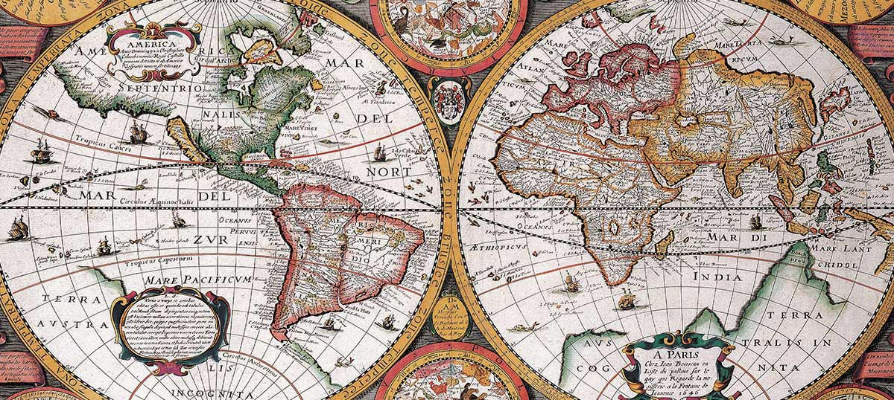

Informaţii generale
Fie că a fost vorba de glorie, de supraviețuire, de speranța îmbogățirii sau, pur și simplu, de curiozitate, dorința de a explora necunoscutul s-a dovedit o trăsătură definitorie a speciei noastre. Explorator poate fi considerat acel Om de Cro-Magnon care a depășit pentru prima dată granițele Africii pentru a se aventură spre sălbatică Europa de acum 60.000 de ani precum, la fel de bine, îl putem numi explorator și pe primul om care a zburat dincolo de atmosfera terestră. Nu la ei ne vom referi însă aici ci la cei care, mai mult sau mai puțin tributari așa numitei Epoci a Marilor Explorări, au redescoperit Pământul, transformându-l pentru totdeauna.
